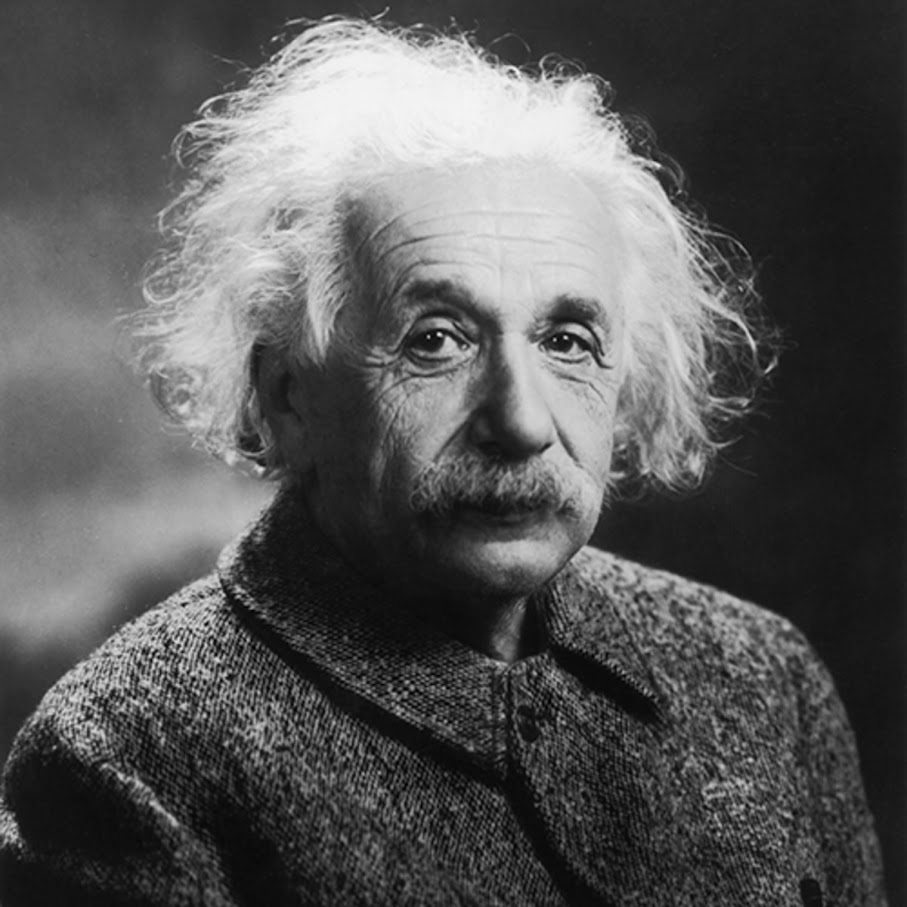

|  |
Albert EinsteinGerman-born theoretical physicist, widely acknowledged to be one of the greatest and most influential physicists of all time. I am best known for developing the theory of relativity, but I also made important contributions to the development of the theory of quantum mechanics. Relativity and quantum mechanics are together the two pillars of modern physics. |
| 123 Albert Street | Albert, AL, 15151 | (555) 555-5555 | albert@albert.com |
| Home | Education | Work Experience | Other Experience | Awards | Contact me |
Other Experience
|